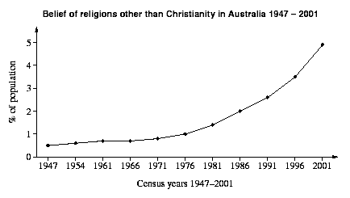

Specimen Questions
- Identify two examples of ecumenical developments in Australia since 1945. (5 marks)
- "Many are still looking for some sense of spiritual direction...they just may be shuffling through a deck of tarot cards instead of rifling through the pages of the Bible". (Sunday Life 15 th July 2001) More and more Australians are turning away from mainstream religions. Analyse the reasons for this movement and discuss your understandings with reference to at least two alternative "new age" religions. (5 marks)
- Account for the popularity of New Age religions in Australia. (5 marks)
-
The graph shows the percentage of Australians who have identified with religions other than Christianity. Account for the trends shown in the graph. (5 marks)
 - Explain the factors that have led to the growth in Pentecostalism in Australia. (5 marks)
- Analyse the relationship between religious traditions and Aboriginal spiritualities in the process of reconciliation. (5 marks)
Sample Responses
Account for the popularity of New Age religions in Australia. (5 marks, 150 words)
New age religions which refer to a range of alternative spiritualities that aim to foster personal happiness, health and meaning in life. Examples of new age religions include feng shui, tarot cards, numerology, astrology and transcendental meditation. There are various reasons as to why they are so popular. The first and main reason for their popularity is because there is a general dissatisfaction with mainstream religions along with a growing longing for a spiritual dimension to life. For example, what makes new age religions attractive to many is its emphasis on creation centred spirituality, which is seen as diametrically opposed to the idea of external means of salvation as taught by the Western Church. Another significant reason for its popularity is the fact that new age religions are liberal in nature. That is, the very nature of new age religions makes it open to people picking and choosing particular aspects they want to incorporate to their personal philosophy. Another reason for their popularity is because some new age practices attest to being a supernatural means to gain personal wealth, be miraculously healed or know the future.
The graph shows the percentage of Australians who have identified with religions other than Christianity. Account for the trends shown in the graph. (5 marks, 150 words)
On the whole, there has been a steady increase in the number of Australians who have identified with religions other than Christianity. The number of people following religions other than Christianity significantly increased in the 1970s. The significant increases in the number of people professing to follow religions other than Christianity from 1970 onwards can be attributed to the waves of immigration that came following the demise of the 'White Australia' Policy in 1973. The effect of the end of this policy was an increase in the diversity of the religious character in Australia because the demise facilitated the immigration of people from non-Anglo-Celtic backgrounds. For example, immigration from the Middle East and Asia has increased the number of Muslims in Australia. For instance, the Lebanese civil war, conflict in Afghanistan and Bosnia have all led to increased Muslim immigration from these places. Immigration from Vietnam, Laos, Thailand, Hong Kong and China have increased the proportion of Buddhists in Australia. For example, following the Vietnam War in the 1960-70s came increased Buddhist immigration from that area. Buddhism has also increased due to conversion of non-Buddhists in Australia. The figures for Hinduism have been increased as a result of immigration from India and Fiji.
Explain the factors that have led to the growth in Pentecostalism in Australia. (5 marks, 150 words)
Pentecostalism is a charismatic and evangelical strand of Christianity that has shown rapid growth over the last few decades. This can be attributed to various factors. One reason for its popularity is the feeling that traditional Christian denomination are out of touch with modern society with staid worship and irrelevant preaching. Pentecostalism's slick use of contemporary music and lively worship is often attractive to younger people. A second reason for their growth is that Pentecostal groups provide a strong sense of community and spiritual support. They often are based around a charismatic leader who is a dynamic and relevant communicator. A third reason for the popularity of Pentecostalism is because it provides definitive, clear cut answers to complex difficulties faced by contemporary society. Pentecostalism has also grown because it provides worshippers with spiritual experiences in the form of 'praying in tongues' and prophecy. Finally, Pentecostalism is increasingly popular as it often promises miraculous healings and prosperity to people who have faith.
Identify two examples of ecumenical developments in Australia since 1945. (5 marks, 150 words)
-
The formation of the Uniting Church. The Uniting Church was formed through a merger of the Presbyterian, Methodist and Congregational churches in 1977 as they realised what they had in common outweighed the things that kept them separated. The Uniting Church continues to have ecumenism as one of its key goals and is involved with ecumenical activities such as the NCCA.
-
The formation of the National Council of Churches in Australia (NCCA). The NCCA's membership consists of 15 Christian denominations in Australia. The NCCA developed out of the Australian Council of Churches, which began after World War II involving Anglicans and Protestants. Orthodox churches joined in the 1980s. It finally disbanded to become the NCCA in 1994, now incorporating the Roman Catholic Church as well. It promotes shared worship, work and dialogue between different Christian denominations.